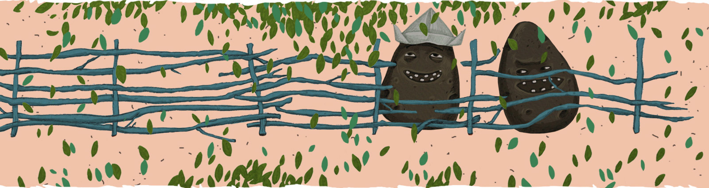
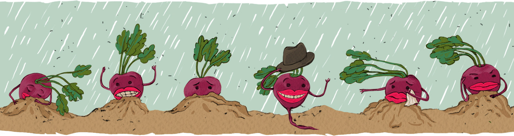
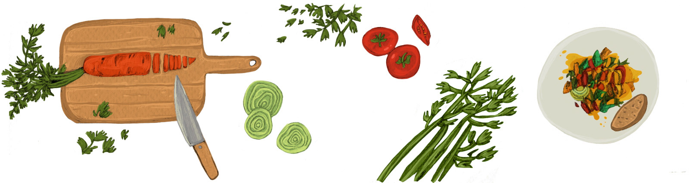

Чешские общины поддерживаемого земледелия устроены по модели сельского хозяйства, где фермер и его заказчик разделяют риски и прибыль без дальнейших посредников. Чешский журнал А2 спросил сооснователя этих инициатив, почему продуктовая самодостаточность сейчас так важна, и как её достигнуть.
Ян Валешка (род. 1980) окончил Карлов университет в Праге, отделение социальной и культурной экологии факультета гуманитарных исследований. Сотрудничал с организацией World CarFree Network. С 2005 года работает в общественном объединении PRO-BIO LIGA, администратор. Сооснователь двух чешских общин поддерживаемого земледелия (ОПЗ).
Вы являетесь одним из лидеров PRO-BIO LIGA. Чем она занимается?
Первоначальными целями этого потребительского отделения союза экологических земледельцев были образование и пропаганда в сфере экологического земледелия. К основным целям постепенно прибавились другие: сокращение цепи распространения продуктов, общественные импликации устойчивого земледелия, школьные и общинные сады и земледелие, поддерживаемое общиной. Короче говоря, всё, что вертится вокруг продуктов, среды обитания и социальной справедливости.
Что для Вас значит продуктовая самодостаточность?
Самодостаточность можно рассматривать на уровнях отдельного человека, региона или нации. Мы предпочитаем относительно узкий термин, который ведёт к ощущению какой-то изоляции, закрытости, десоциализации — к понятию продуктовой суверенности, независимости. Мы подчёркиваем право и возможность создания собственной продовольственной системы, которая соответствовала бы данной географической области на всех общественных уровнях: культурно-историческом, касающемся окружающей среды или общественной точки зрения. В настоящее время продовольственная система скорее универсальна, а это, на мой взгляд, вредно. Продовольственная суверенность базируется на том, что система должна быть разнообразной и подходящей для тех, кто её основывает. Если система находится во власти агропромышленности, т.е. примерно десяти компаний в мире, самодостаточность практически недосягаема. Разве что на уровне отдельного человека, что ведёт к изоляции. Нашей целью не является организация отдельных общин. Децентрализация — да, но не самозакрытие.
Современное земледелие использует высокоэффективные способы производства и переработки. Греческий экономист Янис Вароуфакис, однако, обращает наше внимание, что, если в интересах прибыли мы стремимся как можно больше механизировать человеческий труд, то в конце концов произведённые продукты имеют соответственно меньшую ценность.
Это, несомненно, правда. Современное земледелие производит большое количество продуктов на относительно малой поверхности и относительно дёшево, но потребляет огромное количество энергии. На кДж энергии, которая содержится в продуктах, используют столько же, если не больше, энергии, вложенной в систему земледелия. Сверхзатраты, которые не включены в расчёт и конечную стоимость, делятся на всех — и таким образом оказываются на плечах будущих поколений или стран третьего мира. С успешностью концлагеря мы сжигаем ежедневно десяток людей — мы очень успешны в плане убийств. Производим чем дальше, тем больше вещей, возможно даже при меньшем вкладе человеческого труда, но вещи имеют всё меньше и меньше ценности, и люди сами себе присуждают меньшую и меньшую ценность. Вследствие такой эффективности общество счастливых и удовлетворённых людей возникнуть не может.
Провинция мертва, она превращается в ночлежку для городских жителей
Как Вы понимаете третий пункт коалиционного соглашения чешского правительства, в котором говорится о поддержке местных производителей и в котором подчёркивается продуктовая самодостаточность страны?
Такие инициативы, как продуктовая суверенность и самодостаточность, должны происходить из потребностей самих людей. Государство должно функционировать скорее как ликвидатор препятствий, нежели как инициатор подобных нововведений. Я не думаю, что инициатива представителя крупнейшей чешской агрокорпорации приведёт к поддержке малых производителей, которые в вопросе окружающей среды более экономны. То, что делает AgrofertЧешский холдинг, который занимается сельским хозяйством, пищевой и химической промышленностью. Четвертая по величине чешская компания с выручкой более 4.2 млрд. евро. Включает более 230 компаний из Чехии, Словакии и Германии. Владеет более 57.000 гектаров сельскохозяйственных земель (1.6% от общего числа с\х земель). Генеральный директор и единственный владелец — миллиардер Андрей Бабиш. ни в коем случае не похоже на идеал продовольственной суверенности — это противоположный полюс. Упомянутый пункт скорее говорит о поддержке крупных сельскохозяйственных концернов и их продукции, о больших дотациях, улучшенных налоговых условиях, которые позволят эффективнее поставлять на рынок дешёвые продукты за счёт высоких неучтённых сверхзатрат.

С этим связана почти шизофреническая ситуация многих наших «соглашательских» фермеров, которые связаны с Андреем БабишемТретий самый богатый чех. Владелец корпорации Agrofert. Основатель центристской политической партии "ANO 2011", занимающей в парламенте с 2013 года 47 из 200 мест. и его фирмой. Они получают технику, обслуживание, семена, удобрения и т.д. по ценам, которые сами устанавливают. Потом та же фирма выкупает у них продукцию, часто по демпинговой цене. В такой ситуации с некоторым преувеличением можно говорить о новом феодализме. С одной стороны, фермеры жалуются на низкие выкупные цены, с другой — им полностью удобна эта ситуация, поскольку они не должны заниматься сбытом.
Да, у акционерных обществ и фирм нередко решающую роль имеют экономические факторы. Видимо, в данном случае это настолько выгодно, что они идут даже на риск собственного исчезновения. Более того, часто это настолько абсурдно крупные предприятия, что, даже при желании, у фермеров нет шансов из этого круговорота выйти. Другие каналы сбыта закрыты и не имеют достаточного пространства для манёвров. А семейные производители, в свою очередь, боятся потерять хозяйства. И в режиме постоянного страха они существуют последние двадцать лет.
Эта ситуация является проблемой для всего мира. Есть ли выход из этого заколдованного круга?
Встать на свои ноги. В обычном предпринимательстве изменения можно осуществить быстро, за нескольких месяцев; в земледелии же это рискованный шаг, для которого зачастую необходимо несколько лет. К примеру, если я владелец предприятия, которое производит один вид продуктов для одного покупателя, диверсифицироватьРассредоточение капитала между различными объектами вложений с целью снижения экономических рисков производство настолько рискованно, что на это никто не отважится при настоящих закупочных ценах. Люди охотнее держат синицу в руке и живут с чувством несвободы. Чтобы идти собственным путем, нужна огромная отвага. Фермеры сталкиваются с массой препятствий. Сила капитала действительно велика, особенно в сфере торговли продуктами питания, где властвует высокая конкуренция и низкая рентабельность. Кроме того, чешский потребитель необразован и интересуется только низкой ценой, которую предлагает, разумеется, тот, кто имеет высокую эффективность и оптовую скидку.
Потребитель ответственен за влияние сельского хозяйства на окружающую среду и фермера
Вы занимаетесь созданием и пропагандированием альтернатив. Каковы, по-вашему, главные возможности для земледелия и пищевой продукции?
О ситуации в нашем сельском хозяйстве я сужу из статистики по основным показателям: географии и привычкам, связанным с питанием. Статистика говорит ясно: в Чехии, в сравнении с Европой, природное хозяйство занимает наибольший процент производства продуктов питания, причём здесь не существует диверсификации сельскохозяйственной деятельности. Провинция мертва, она превращается в ночлежку для городских жителей, и сельское хозяйство не производит никакой добавленной стоимостиСтоимость проданного товара за вычетом стоимости материалов и полуфабрикатов, затраченных на производство. Равняется выручке, которая включает в себя эквивалент затрат на заработную плату, процент на капитал, ренту и прибыль.. На полях преобладают 2-3 культуры, которые субсидируются, что с точки зрения посевных практик — достаточно тривиальных, — большая ошибка. Ситуация драматическая, даже не говоря о воздействии на флору и фауну, например, о снижении популяции полевых птиц, которое является отражением состояния окружающей среды. После 1989Бархатная революция — бескровное свержение коммунистического режима в Чехословакии в результате уличных акций протестов в ноябре–декабре 1989 года. ситуация улучшилась, но через 10 лет интенсификация земледелия снова возросла. А если посмотреть на наши продуктовые предпочтения, выясняется, что мы свалка Европы. Магазины предлагают очень некачественную заграничную продукцию. Но таковы и всемирные тенденции. Поэтому потребность в новых инициативах, с моей точки зрения, однозначна. Прежде всего, касательно окружающей среды: вести сельское хозяйство так, чтобы не уничтожать окружающую среду. Эрозия, отравление почвы химикатами и снижение её продуктивности всё более тревожны. Далее, здесь есть и социальные импликации: уровень жизни в провинции близок к тотальной бедности, и никакие миллиарды, вложенные в развитие, не способны улучшить ситуацию. С этим связан и экономический вопрос. Земледелие на сегодняшний день является пожирателем субсидий. Многие сельские хозяйства вообще не интересуются своей производительностью. Вдобавок существуют предприятия, которые специализируются исключительно на субсидируемых продуктах.

Одной из альтернатив, которые Вы стремитесь ввести, являются ОПЗ, общины поддерживаемого земледелия…
Да, это может звучать как современный deus ex machina, но речь идёт о переводе понятия community supported agriculture. Эта модель основана на потребностях людей, которые ищут качественные продукты, и на потребности фермеров вырваться из ситуации, о которой мы говорили. Эти две потребности переплетаются во взаимные долговременные обязательства. Их смысл в более справедливом решении проблем сельскохозяйственного производства, чем в преобладающей теперь конвенциональной системе производства. Часть риска, которого опасаются земледельцы, переносится и на конечного потребителя. Потребитель перенимает часть ответственности за то, каким будет сельское хозяйство, за его влияние на окружающую среду и фермера. Это альтернатива демпинговым ценам, взаимному обкрадыванию, ликвидации почвы, эксплуатации работников (причём не только из стран третьего мира).
Какова история ОПЗ? Где и когда эта система возникла?
Существуют две ветви. Первая ведёт в Японию 60-х годов, где эта система называется такеи — «еда с лицом земледельца». Послевоенная система благосостояния тогда столкнулась с проблемами из-за перевода сельского хозяйства в промышленное русло, что было вызвано потребностью накормить как можно больше людей. Потребители были обеспокоены низким качеством продуктов, и нужно было получать их иначе, нежели через посредничество большого промышленного производства. Вторая ветвь начинается в 60-70-х годах в США, куда переселились швейцарские последователи идеи биодинамическогоНаправление экологически чистого земледелия, отвергающего применение искусственных минеральных удобрений и ядохимикатов. Фермеры и садоводы стараются использовать только те материалы, которые образовались в процессе жизнедеятельности: компост, навоз, зелёные удобрения, жидкие удобрения из растений. земледелия. Тогда в США из-за упора на эффективность исчезало множество малых ферм. Переломом стали нулевые года XXI века, когда во Франции появилась система AMAP, которая базируется на идеях японцев и американцев. В связи с AMAPАссоциация по охране малого хозяйствования общины поддерживаемого земледелия начали появляться в Италии, где существует сильная традиция солидарной экономики. В Великобритании, в свою очередь, преобладают общины, основанные на принципах кооперации и на гражданских инициативах. Интересно, что отдельные ОПЗ возникли независимо друг от друга, одновременно, исходя из весьма схожих идеалов.
Мы создаём страховку перед надвигающимся кризисом
В системе ОПЗ отсутствует любой посредник: перекупщик, часть цепи или торговец. Отношения основаны на оси «производитель-потребитель». Можете ли Вы описать основные модели такого сотрудничества?
Наиболее распространённая форма — модель AMAP. Получатели напрямую договариваются с фермеров, что будут в течении длительного времени покупать его продукцию и давать за неё то, что нужно для поддержания хозяйства. А фермеры предоставляют продукцию с желаемыми характеристиками: экологическую, биодинамическую или конвенциональную. Для таких потребителей во французском языке существует красивый термин — consomm’ acteur. Это уже не просто потребитель, а действующее лицо в производстве продовольствия. Вторую главную модель ОПЗ я называю «системой раздела урожая». Это система, в рамках которой группа людей вместе создаёт способ производства продуктов для личного потребления. Они, например, могут купить и использовать существующую ферму. Могут нанять фермера и платить за его труд. Могут работать сами. Основой является ответственность каждого участника за хозяйство общины.
Сколько процентов потребления продуктов покрывает система ОПЗ?
Можно ли полностью избежать посещения супермаркетов? Мясо я получаю только посредством ОПЗ, раз в 2-3 недели. Если бы с мая по ноябрь человек не был придирчив и принял сезонные ограничения, он мог бы выжить и с овощами и фруктами исключительно из ОПЗ. Если бы потребитель мог совместно с производителем финансировать постройку складов, теплиц и т.д., производитель мог бы поставлять овощи весь год. Такие фермы есть в Германии, например. Но в Чехии пока нет острой потребности в этом. Для мяса, молока и яиц охват круглогодичный. Для овощей и фруктов у нас ещё есть резервы.
Европейский центральный банк и Международный валютный фонд не столько решают проблемы с банковским кризисом и спекуляциями, сколько принуждают государства к принятию экономических мер. Греция, пожалуй, самый острый пример того, что может постепенно постигнуть всю Европу. В Испании и Греции многочисленные ОПЗ возникают исключительно из необходимости поддержать существование.
Тот факт, что ОПЗ появляются вынужденно, я считаю скорее фактором риска. Новые структуры в Греции возникают в критической ситуации, по-быстрому и под большим давлением. Я думаю, основывать чешские общины в период относительного достатка выгоднее. Мы осознаём, что существует опасность для общества, и создаём страховку перед надвигающимся кризисом.

Я думаю, необходимо демифизировать формат фермерских магазинов, которые возникают как грибы после дождя. С ОПЗ они, конечно, не имеют ничего общего. Они по-своему паразитируют на интересе к местной продукции и повторяют проблемы, которые ОПЗ пытается решить, например, конвенциональные стратегии демпинговых закупок у фермеров или конвенциональные методы распространения и торговли.
Многое зависит от того, кто открывает фермерские магазины и с какой целью. Но это торговая, а не партнёрская модель, она принципиально отлична от общин поддерживаемого земледелия. В ОПЗ важно то, что продукты не являются и не должны быть предметом торга.
Недавно Вы принимали участие во всеевропейской встрече представителей ОПЗ: на одну французскую ферму приехали представители 17 государств. Какие впечатления?
Целью встречи было договориться про общую ценностную позицию: кто мы и куда хотели бы направлять усилия. Но в связи с внутренней децентрализацией и отсутствием иерархии этого не произошло… Образовалось пять рабочих групп, которые будут заниматься отдельными темами: исследованиями в области ОПЗ, репрезентацией в европейском масштабе или защитой нужд и т.п. Работа над ценностной позицией необходима, но, видимо, время для этого ещё не наступило. Так что наиболее важными функциями встречи были вдохновение и взаимная поддержка, ведь сторонников ОПЗ многие считают аутсайдерами, чудаками.
Современная продовольственная система, в сущности, нереформируема
Выгодные альтернативы быстро попадают в поле зрения транснациональных корпораций, потому что они проводят мониторинг рынка, могут почувствовать наличие спроса. Так сейчас массово появляются био и местные продукты. Вы не боитесь, что на альтернативе ОПЗ кто-нибудь попробует заработать?
На ней определённо наживается фермерская продукция, продажа «с поля» и т.п. Тем не менее, на партнёрстве — основе ОПЗ — нельзя заработать, поэтому такая альтернатива корпорации не привлекает. Корпорация может сделать рекламу, может злоупотребить первоначальной идеей, но реальных людей с их реальной общей проблемой никакая корпорация создать не может.
Существует ли какая-либо связь между ОПЗ и социополитическими левыми инициативами?
Во Франции, например, AMAP не имеет никакого политического подтекста, она направлена исключительно на земледелие и потребителей, несмотря на то, что на региональном уровне коммуницирует с политическими структурами. А в Германии большая община Solidarische Landwirtschaft открыто связана с анархическими и левыми группами, которые проявляют активность не только в области сельского хозяйства и продуктов питания, но и в сфере общественных перемен в целом.
Может ли ОПЗ стоять во главе общественных изменений?
Современная продовольственная система настолько закреплена в системе экономики, что является, в сущности, нереформируемой. Я не знаю, есть ли у ОПЗ потенциал к изменениям в продовольственной системе, но они учат нас действовать по-другому, на основе взаимного диалога и общественных решений. И это значительный прогресс в сравнении с тем, чему мы учились последние 20 лет, т.е. действиям для собственного, а не для общественного блага.
Вы думаете, это первый шаг, и за вами последуют другие?
Мы не думаем о себе, как об общественном двигателе априори. Мы не хотим менять общество, но хотим показать путь. У ОПЗ есть потенциал к общественным переменам, но это не главная цель. Это очень демократическое движение, ведь никто самостоятельно не решает, что будут делать все. Дебаты основаны на принципах согласия, прозрачности и совместного принятия решений. В этом мы похожи на движение Occupy. Консенсус в принятии решений является эталоном в большинстве общин. Как и солидарная экономика.